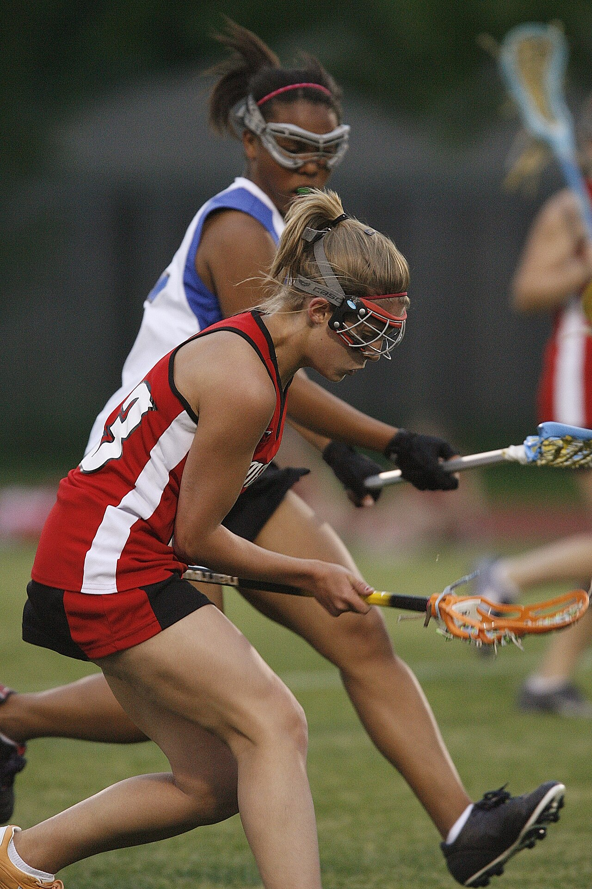

Girls' Lacrosse Plays at Full Sprint
Stand behind the bench at a girls' lacrosse game and the first thing that registers is the noise of cleats. Twelve players a side spread across a full-size field, and yet the ball crosses it in three passes and five seconds. A save at one end becomes a shot at the other before the crowd has finished reacting. Scores climb into double digits, leads vanish in two minutes, and the fastest player on the field is often the one who never touches the ball at all — she is the midfielder sprinting the length of the turf to turn defense into attack. New fans arrive expecting something like soccer with sticks. They leave talking about speed.
It Starts With the Cradle
Everything begins with the crosse, the mesh-pocketed stick that gives the sport its name, and with cradling — the gentle rocking motion players use to keep the ball seated while they run. The girls' pocket is deliberately shallow: by rule, the top of the ball must stay visible above the sidewall when the stick is held at eye level. That one equipment rule shapes the whole sport. A shallow pocket means the ball sits exposed, so defenders hunt it with stick checks, and a carrier who forgets to cradle will hear the ball rattle loose onto the turf. Catching, passing and shooting all happen in stride, most of them one-handed at a dead run.
The game's roots run deep: it is the oldest team sport on the continent, created by the Haudenosaunee peoples of the Northeast and played for centuries before anyone wrote a rulebook. The modern gear list is short by comparison — a stick, a mouthguard, and protective goggles, which teen health references such as KidsHealth list as non-negotiable for a sport where sticks swing near eye level. Master the cradle, and the rest of the sport opens up.
The Draw Is a Duel
After every goal, the game restarts the same way: two players back to back at the center circle, the ball pinned between the backs of their crosses, sticks pressed together at hip height. At the whistle they lift, twist and flick, and the ball pops into the air for whoever reads it best. It looks like a coin flip. It is not. Draw specialists drill the motion thousands of times, varying the angle to push the ball toward a teammate, toward a wing player charging in from the circle, or straight up for a self-draw. Coaches track draw controls the way basketball tracks rebounds, because a team that wins the draw can starve an opponent of possessions for an entire quarter.

Twelve a Side, Four Jobs
Each team fields twelve: three attackers, five midfielders, three defenders and a goalie. A restraining line across each half limits how many players can crowd one end — no more than seven attackers may cross into the offensive half, and no more than eight defenders, counting the goalie, may stay back. The rule keeps the game stretched and fast. Midfielders are the engine: they defend their own crease, win ground balls in the middle third and join the attack seconds later, which is why coaches happily recruit sprinters and cross-country runners for the position. Attackers work the space around the crease and the 8-meter arc, cutting hard for feeds. Defenders mark them step for step, stick up. And the goalie anchors it all with a wider pocket, clearing the ball upfield the moment a save is made.
California Caught On
For most of its history, girls' lacrosse belonged to the East Coast — schools in Maryland and New York treated it as a birthright. California took longer, then moved quickly. The California Interscholastic Federation counted 10,737 girls playing the sport in 2019–20, a jump of more than 9 percent in a single year and enough to make it a top-ten girls' sport in the state. Section playoffs now crown champions across California, and postseason brackets that once fit on an index card fill whole weekends in May. Club tournaments run all summer and feed the school season, so first-year high school players now routinely arrive with two or three years of experience already behind them. The national picture matches the surge: the national federation counted 99,292 girls playing high school lacrosse at 1,682 schools in 2024–25, tenth among all girls' sports in the country. College programs have taken notice, and scholarships wait for draw specialists and two-way midfielders alike.
The Olympic Shortcut: Sixes
The sport's next stage is its biggest. Lacrosse returns to the Olympic program at the Los Angeles Games in 2028 — a medal sport for the first time since 1908, and the first time women will play it at an Olympics at all. The format is sixes: six players a side instead of twelve, a compact field, four eight-minute quarters and a 30-second shot clock that makes stalling impossible. Every player attacks and defends; nobody rests. For a California sophomore winning draws this spring, the pathway is suddenly very short and very visible: master the sprint version of one of the world's fastest field sports, and the Olympics are no longer somebody else's dream.